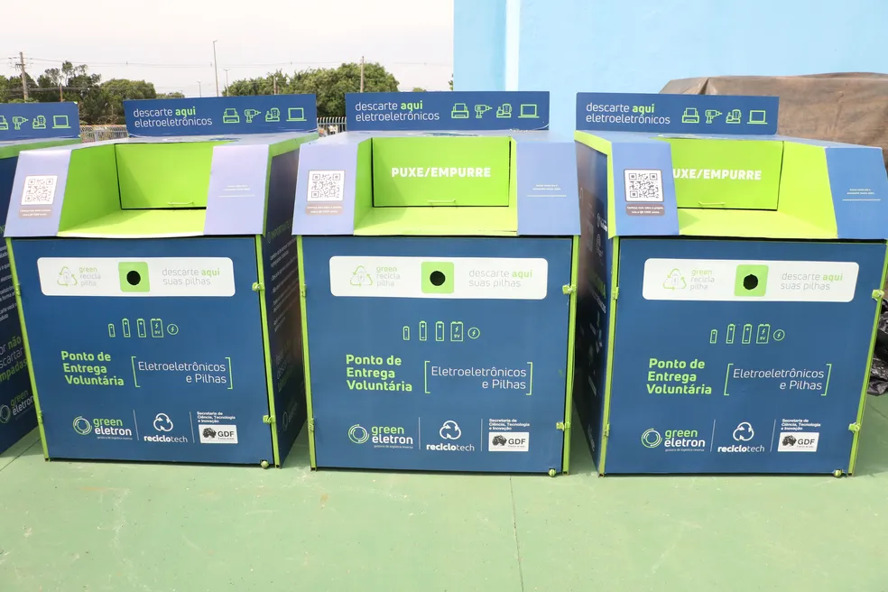
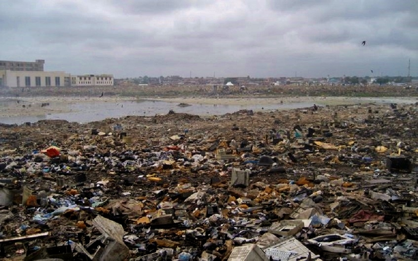
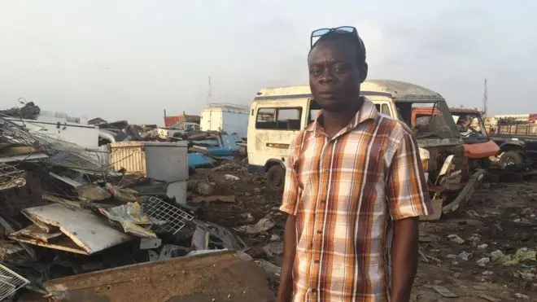
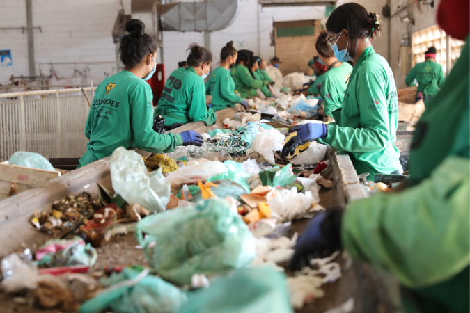

OS DESCARTES:

Descarte correto
O descarte correto do lixo eletrônico é uma das principais maneiras de diminuir os problemas causados pelo acúmulo desses resíduos. Em vez de jogar aparelhos antigos ou quebrados no lixo comum, o ideal é procurar pontos de coleta ou empresas especializadas que recebam esse tipo de material.
Uma das formas de fazer isso é por meio da logística reversa, que permite que produtos eletrônicos retornem aos fabricantes ou comerciantes depois de serem utilizados pelos consumidores. Assim, esses equipamentos podem passar por processos de separação e reciclagem, permitindo que alguns de seus materiais sejam reaproveitados na produção de novos produtos.
Outra possibilidade é tentar consertar os aparelhos que ainda podem funcionar ou até mesmo doá-los para pessoas que precisam. Dessa maneira, é possível aumentar o tempo de utilização dos equipamentos e evitar que eles se transformem em resíduos antes do necessário.
Pequenas atitudes como essas fazem diferença quando praticadas por muitas pessoas. Por isso, é importante que a população tenha acesso à informação e saiba onde descartar seus aparelhos. Afinal, cuidar do destino do lixo eletrônico é uma responsabilidade de todos e uma forma de contribuir para a preservação do meio ambiente.

Descarte incorreto
O descarte incorreto do lixo eletrônico acontece quando aparelhos que não são mais utilizados são jogados no lixo comum, abandonados em terrenos, ruas ou até mesmo descartados em rios e outros ambientes naturais. Muitas vezes, isso acontece por falta de informação ou porque as pessoas não sabem onde podem entregar esses materiais.
O problema é que os equipamentos eletrônicos possuem diversos componentes que podem prejudicar o meio ambiente quando não recebem o tratamento adequado. Alguns deles contêm substâncias como chumbo, mercúrio e cádmio, que podem contaminar o solo e a água, afetando plantas, animais e também os seres humanos.
Além dos riscos de contaminação, esse tipo de descarte também representa um grande desperdício. Muitos aparelhos possuem peças e materiais que ainda poderiam ser aproveitados ou reciclados, mas acabam sendo perdidos quando são jogados em locais inadequados.
Por isso, é importante entender que o lixo eletrônico não deve ser descartado junto com o lixo doméstico. Mesmo que um aparelho esteja quebrado ou não tenha mais utilidade, ele precisa ser encaminhado para um local apropriado, onde possa receber o tratamento correto.
CONSEQUÊNCIAS DO DESCARTE INCORRETO:
Ambientais:
Mesmo que seja necessário problematizar a produção desses materiais, que se utiliza da exploração de vários recursos naturais, a ação sobre os resíduos futuros também é importante. E por isso é importante saber o destino dos mesmos. Quando encaminhados para contato direto com o meio ambiente, grandes lixões a céu aberto, aterros sanitários e outros locais inadequados para receber esse lixo, o mesmo acaba contaminando a região. Diversas situações confirmam que metais pesados presentes nesses produtos, em grandes concentrações, podem causar efeitos devastadores para o meio ambiente e a saúde da população de animais e plantas do próprio, incluindo os seres humanos. Por isso, esses resíduos são considerados um dos maiores problemas ambientais no mundo, justamente por essa contaminação extensa da fauna e flora. O exemplo mais comum é a infiltração de materiais tóxicos no solo, indo para os lençois freáticos e consequentemente, afetando a água para consumo humano e de outras espécies.

Sociais:
As situações de pessoas vivendo em áreas contaminadas pelo lixo eletrônico são extensas, e muito preocupantes. Sua qualidade de vida é rebaixada e a saúde em risco. Uma situação real que acontece atualmente é em Agbogbloshie, centro informal de reciclagem de e-lixo em Acra, capital de Gana e um dos locais mais poluídos do mundo. A cada ano centenas de milhares de toneladas de lixo eletrônico vindos da Europa e da América do Norte encontram neste espaço seu destino final, no qual têm seus metais valiosos extirpados em uma forma rudimentar de reciclagem, que incluem a queima dos mesmos. Os moradores vivem em condições precárias, se submetendo a serem catadores para o próprio sustento. Outra questão importante que afeta diretamente o destino do e-lixo é a obsolescência programada. Trata-se de uma estratégia na qual desde o desenvolvimento de um produto a indústria já programa e planeja o fim antecipado de sua vida útil, seja pelo desgaste de suas peças, pela evolução tecnológica que torna obrigatória a compra de um modelo atualizado ou pelo convencimento psicológico de que aquele produto é “datado”. Isso é feito com o intuito de estimular o consumo e movimentar o mercado industrial.

Econômicas e políticas:
O descarte incorreto do lixo eletrônico não causa problemas apenas para o meio ambiente, mas também traz consequências para a economia e para a administração pública. Isso porque cuidar desses resíduos exige investimentos em coleta, transporte, fiscalização e reciclagem, além de políticas que incentivem a população a realizar o descarte da maneira correta. No Brasil, existe a Política Nacional de Resíduos Sólidos, criada em 2010, que estabelece regras para o descarte e o tratamento adequado do lixo. Essa lei também determina que fabricantes, comerciantes, consumidores e o governo devem compartilhar a responsabilidade pelo destino desses materiais. Porém, nem sempre essas medidas são colocadas em prática como deveriam, o que acaba dificultando o controle do descarte irregular. Outro problema está relacionado ao desperdício de materiais que poderiam ser reaproveitados. Muitos aparelhos eletrônicos possuem metais como cobre, alumínio e ouro, que podem ser recuperados durante a reciclagem e utilizados na fabricação de novos produtos. Quando esses equipamentos são jogados em locais inadequados, esses materiais acabam sendo perdidos, aumentando a necessidade de retirar novos recursos da natureza.Além disso, a contaminação causada pelo lixo eletrônico pode gerar gastos para o governo, principalmente com a recuperação de áreas afetadas e com problemas que atingem a saúde da população. Dessa forma, fica claro que o descarte incorreto não prejudica somente a natureza, mas também afeta a economia e a qualidade de vida das pessoas.
EM CUBATÃO:
Pontos de coleta em Cubatão:
Centro:
- Casas Bahia — Avenida Nove de Abril, 1.995.
- Casas Pernambucanas — Avenida Nove de Abril, 2.041.
- Droga Raia — Avenida Nove de Abril, 2.193.
- Drogaria São Paulo — Avenida Nove de Abril, 2.221.
Jardim Casqueiro:
- Centro Esportivo Armando Cunha — Avenida das Américas, 550.
- UBS Jardim Casqueiro — Rua Espanha, s/nº.
Vila Nova:
- Centro Esportivo Pita — Rua Arlindo Leandro, 13.
- UBS Vila Nova — Rua São João, 185.
- Droga Raia — Praça Frei Damião, s/nº.
- Drogaria São Paulo — Avenida Nove de Abril, 2.221.
Outros bairros:
- Centro Esportivo Ayrton Romero da Nóbrega — Rua Embaixador Pedro de Toledo, 366, Vila Paulista.
- UBS 31 de Março — Rua Antônio Simões de Almeida, s/nº.
- UBS Área 5 — Rua Manoel Leal, s/nº, Jardim São Francisco.
- USF Vila São José — Avenida Bandeirantes, s/nº.
- USF Água Fria — Rua Elias Zarzur, 687.
- USF Cota 200 — Via Anchieta, Km 50, 2ª Passarela.
- Escola SENAI — Praça da Bíblia, 1.